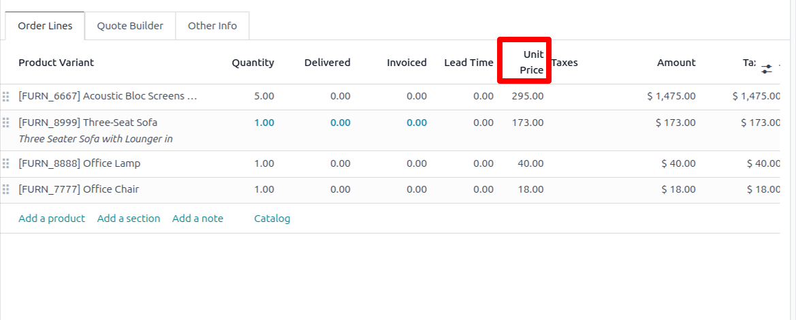

See it in action

Resizing the chatter — the form sheet expands to fill the space.

Column headers wrap instead of truncating, and row height is adjustable.
Drag to resize the chatter, the form height, list row height and embedded lists. Long column headers wrap onto two lines instead of being cut off with an ellipsis.
Odoo fixes the chatter width, clips the form to exactly the window height, locks row height, and truncates any column header too long for its column. None of those are configurable. This module adds a drag handle to each one and remembers what you chose.
|
01 — Chatter
Resize the chatter panelA drag handle on the chatter's left edge widens or narrows it, and the form sheet expands to use the space you free up. Your width is remembered next time you open a form. |
02 — Form height
Expand the form verticallyOdoo clips form content to the window height with a small internal scrollbar. Drag the bottom handle to let the page grow instead, so long order lines are visible without a nested scroll. |
|
03 — List rows
Row height & wrapping headersHeaders like Taxes, Amount Untaxed or Discount Amt. wrap onto a second line instead of being cut off. A grip in the header corner makes rows tighter or roomier. |
04 — Embedded lists
Resize order line boxesA strip along the bottom edge of any one2many/many2many list sets how tall it is — remembered separately for each model and field, so Order Lines and Invoice Lines keep their own sizes. |
Resizing the chatter — the form sheet expands to fill the space.

Column headers wrap instead of truncating, and row height is adjustable.
| Per user | Sizes are stored in each person's own browser, so colleagues sharing a database each keep their own preferences. |
| Nothing changes until you drag | Stock padding and widths are measured at runtime, so a fresh install looks pixel-identical to standard Odoo until someone moves a handle. |
| Odoo's layout is respected | Whether the chatter sits beside or below the form stays Odoo's decision. When the window is narrow and Odoo moves the chatter down, the module steps aside entirely. |
| No database footprint | No models, no fields, no views inherited. Front-end assets only — install and uninstall freely. |
| Dependencies | Only the standard web and mail modules — no Enterprise-only dependency. |
| Tested on | Odoo 19.0, Community and Enterprise. This listing is the 19.0 build. |
| License | LGPL-3 — free to use, modify and redistribute, in commercial deployments included. |
This module is free and LGPL-3 licensed, so formal support isn't included — but bug reports are genuinely welcome and do get fixed. Get in touch and describe what you're seeing.
Core Codings — corecoddings@gmail.com